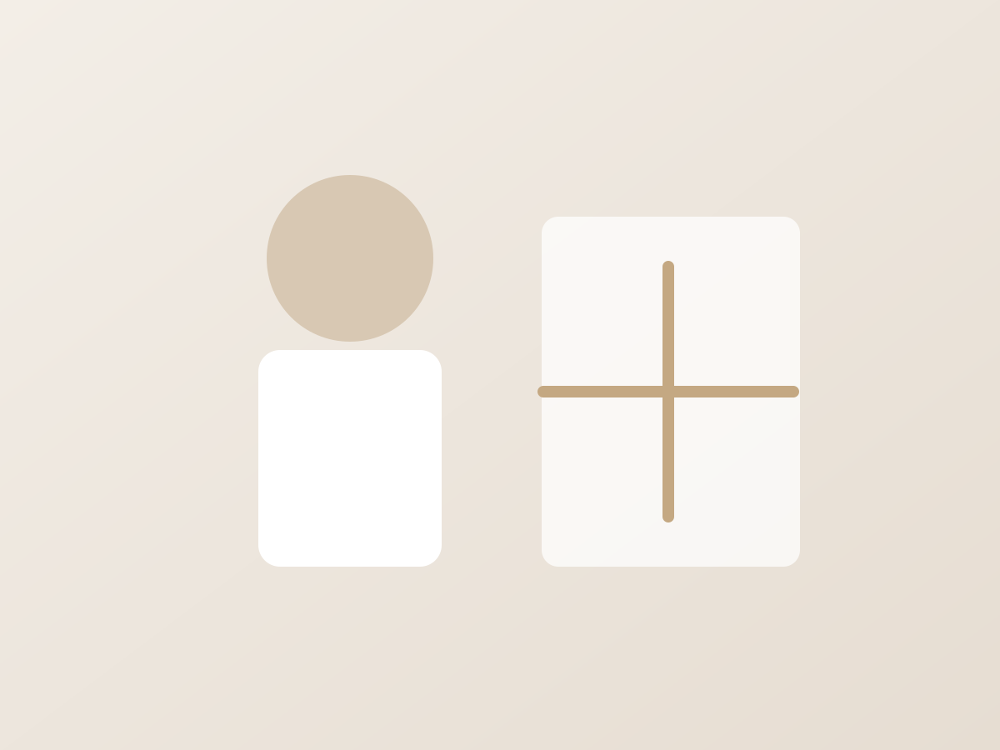

Tatjana Tokareva
Ārste – ginekoloģe, dzemdību un ultrasonogrāfijas speciāliste ar vairāk kā 25 gadu darba pieredzi.
Veic sieviešu profilaktiskās apskates, konsultē par ginekoloģiskajām saslimšanām, kontracepcijas izvēli un ģimenes plānošanu.
Darba laiks
Pirmdien 14.00 – 18.00
Otrdien 09.00 – 14.00
Trešdien 09.00 – 14.00
Ceturdien 14.00 – 18.00
Piektdien 13.00 – 15.00
Vasarā piektdienās slēgts
Татьяна Токарева
Врач-гинеколог, специалист по акушерству и ультразвуковой диагностике с более чем 25-летним опытом работы.
Проводит профилактические осмотры женщин, консультирует по гинекологическим заболеваниям, выбору контрацепции и планированию семьи.
Часы приёма
Понедельник 14.00 – 18.00
Вторник 09.00 – 14.00
Среда 09.00 – 14.00
Четверг 14.00 – 18.00
Пятница 13.00 – 15.00
Летом в пятницу закрыто